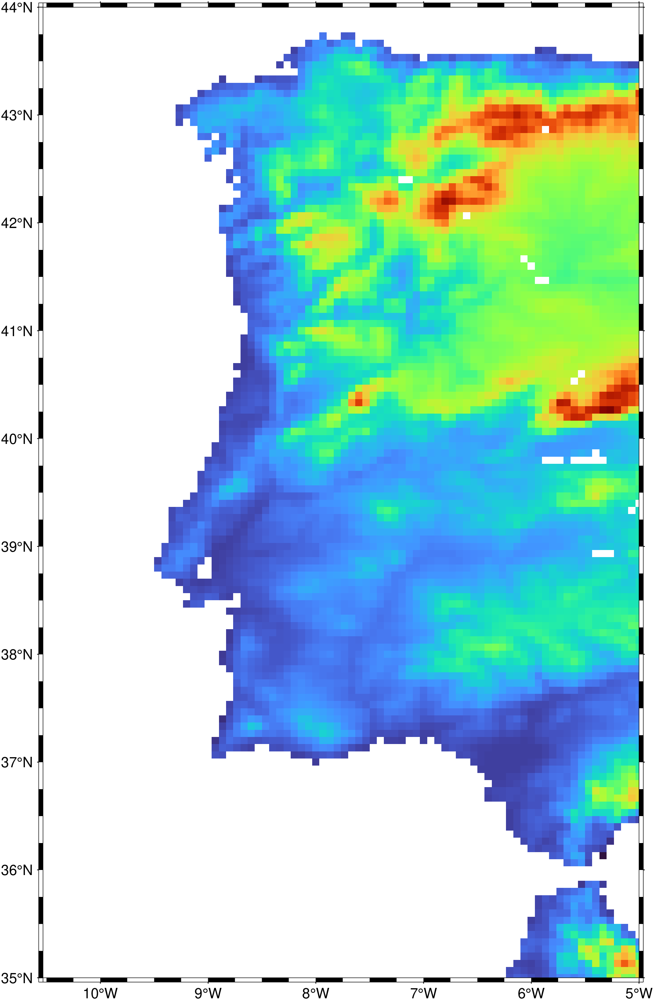

using GMT
G = grdcut("@earth_relief_04m", region=(-10.5, -5, 35, 44));
G = grdlandmask(G, maskvalues=(NaN,1))
viz(G)
Create a “wet-dry” mask grid from shoreline data base
Reads the selected shoreline database and uses that information to decide which nodes in the specified grid are over land or over water. The nodes defined by the selected region and lattice spacing will be set according to one of two criteria: (1) land vs water, or (2) the more detailed (hierarchical) ocean vs land vs lake vs island vs pond. The resulting mask may be used in subsequent operations involving grdmath to mask out data from land [or water] areas.
The second method expects a GMTgrid or an GMTimage as first argument and will clip this grid/image outside (the default) or inside the land areas. Grids are clipped according to the maskvalues set by that option and images are set to transparent in the regions outside (or inside) of the land areas. See also the mask module that has also a method with a similar behavior but uses polygons set via an input argument.
I or inc or increment or spacing : – inc=x_inc | inc=(x_inc, y_inc) | inc=“xinc[+e|n][/yinc[+e|n]]”
Specify the grid increments or the block sizes. More at [spacing](../common_opts/opt_I.html)
R or region or limits : – limits=(xmin, xmax, ymin, ymax) | limits=(BB=(xmin, xmax, ymin, ymax),) | limits=(LLUR=(xmin, xmax, ymin, ymax),units=“unit”) | …more
Specify the region of interest. More at [limits](../common_opts/opt_R.html). For perspective view view, optionally add zmin,zmax. This option may be used to indicate the range used for the 3-D axes. You may ask for a larger w/e/s/n region to have more room between the image and the axes.
-A or area : – area=(min_area[,min_level,max_level]), river_lake=true, lake=true, antarctica_ground=true, skip60S=true, skipN60S=true, percent=pct)
Features with an area smaller than min_area in km^2 or of hierarchical level that is lower than min_level or higher than max_level will not be plotted [Default is 0/0/4 (all features)]. Level 2 (lakes) contains regular lakes and wide river bodies which we normally include as lakes; use river_lake=true to just get river-lakes or lake=true to just get regular lakes. By default we select the ice shelf boundary as the coastline for Antarctica; use antarctica_ground=true to instead select the ice grounding line as coastline. For expert users who wish to print their own Antarctica coastline and islands via plot you can use skip60S=true to skip all GSHHG features below 60S or skipN60S=true to instead skip all features north of 60S. Finally, append percent=pct to exclude polygons whose percentage area of the corresponding full-resolution feature is less than pct.
D or res or resolution : – res=:full | res=:high | res=:auto
Selects the resolution of the data set to use full, high, intermediate, low, and crude. The resolution drops off by 80% between data sets. Alternatively, chooses res=auto, to automatically select the best resolution given the chosen region. Note that because the coastlines differ in details a node in a mask file using one resolution is not guaranteed to remain inside [or outside] when a different resolution is selected.
E or border or bordervalues : – border=true | border=bordervalues
Nodes that fall exactly on a polygon boundary should be considered to be outside the polygon [Default considers them to be inside]. Alternatively, append either the four values cborder/lborder/iborder/pborder or just the single value bordervalue (for the case when they should all be the same value). This turns on the line-tracking mode. Now, after setting the mask values specified via maskvalues we trace the lines and change the node values for all cells traversed by a line to the corresponding border value. Here, cborder is used for cells traversed by the coastline, lborder for cells traversed by a lake outline, iborder for islands-in-lakes outlines, and pborder for ponds-in-islands-in-lakes outlines [Default is no line tracing].
G or save or outgrid or outfile : – outgrid=[=ID][+ddivisor][+ninvalid][+ooffset|a][+sscale|a][:driver[dataType][+coptions]]
Give the name of the output grid file. Optionally, append =ID for writing a specific file format (See full description). The following modifiers are supported:
Note1: Any offset is added before any scaling. +sa also sets +oa (unless overridden). To write specific formats via GDAL, use =gd and supply driver (and optionally dataType) and/or one or more concatenated GDAL -co options using +c. See the “Writing grids and images” cookbook section for more details.
Note2: This is optional and to be used only when saving the result directly on disk. Otherwise, just use the G = modulename(...) form.
N or maskvalues : – maskvalues=(wet,dry) | maskvalues=(ocean,land,lake,island,pond)
Sets the values that will be assigned to nodes. Values can be any number, including NaN. Also select border to let nodes exactly on feature boundaries be considered outside [Default is inside]. Specify this information using 1 of 2 formats:
maskvalues=(wet,dry)
maskvalues=(ocean,land,lake,island,pond)
[Default is (0,1,0,1,0) (i.e., 0,1)].
V or verbose : – verbose=true | verbose=level
Select verbosity level. More at [verbose](../common_opts/opt_V.html)
r or reg or registration : – reg=:p | reg=:g
Select gridline or pixel node registration. Used only when output is a grid. More at
x or cores : – cores=N
Limit the number of cores used when making the individual frames. By default we try to use all available cores. Append N to only use n cores (if too large it will be truncated to the maximum cores available). Finally, give a negative N to select (all - N) cores (or at least 1 if N equals or exceeds all). The parallel processing does not depend on OpenMP.
A grid produced by grdlandmask is a categorical dataset. As such, one has to be careful not to interpolate it with standard methods, such as splines. However, if you make a map of this grid using a map projection the grid will be reprojected to yield a rectangular matrix in the projected coordinates. This interpolation is done using splines by default and thus may yield artifacts in your map. We recommend you use grdimage interp=:n to instead use a nearest neighbor interpolation for such cases.
Before you make your own masks, be aware that the GMT data server offers global landmask files in multiple grid resolutions. These can be accessed using the remote file names @earth_mask_rru[_reg], where rru and the optional reg indicate the resolution and registration that you desire. See Global Earth Mask Grids for more information on the availability of resolutions.
To set all nodes on land to NaN, and nodes over water to 1, using the high resolution data set, do
To make a 1x1 degree global grid with the hierarchical levels of the nodes based on the low resolution data:
Mask ocean areas to NaN from a relief grid.
The coastline database is GSHHG (formerly GSHHS) which is compiled from three sources: World Vector Shorelines (WVS, not including Antarctica), CIA World Data Bank II (WDBII), and Atlas of the Cryosphere (AC, for Antarctica only). Apart from Antarctica, all level-1 polygons (ocean-land boundary) are derived from the more accurate WVS while all higher level polygons (level 2-4, representing land/lake, lake/island-in-lake, and island-in-lake/lake-in-island-in-lake boundaries) are taken from WDBII. The Antarctica coastlines come in two flavors: ice-front or grounding line, selectable via the area option. Much processing has taken place to convert WVS, WDBII, and AC data into usable form for GMT: assembling closed polygons from line segments, checking for duplicates, and correcting for crossings between polygons. The area of each polygon has been determined so that the user may choose not to draw features smaller than a minimum area (see area); one may also limit the highest hierarchical level of polygons to be included (4 is the maximum). The 4 lower-resolution databases were derived from the full resolution database using the Douglas-Peucker line-simplification algorithm. The classification of rivers and borders follow that of the WDBII. See The Global Self-consistent, Hierarchical, High-resolution Geography Database (GSHHG) for further details.